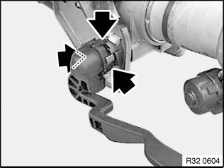

32 31 241 Replacing Steering Column Adjustment Lever
32 31 241 Replacing adjusting lever for steering columnNecessary preliminary tasks:
^ Remove steering column (except on E84)

If necessary, remove cable duct from steering column.
Unclip adjusting lever.
Installation:
Align adjusting lever to steering column and attach straight to prevent the locks from being damaged.
Check locks after attachment, replace adjusting lever if necessary.